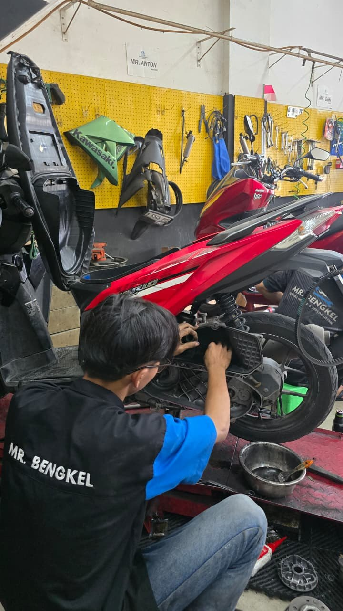
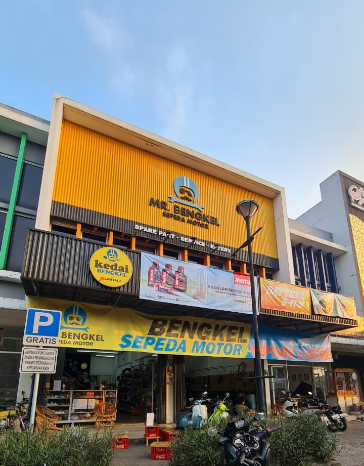
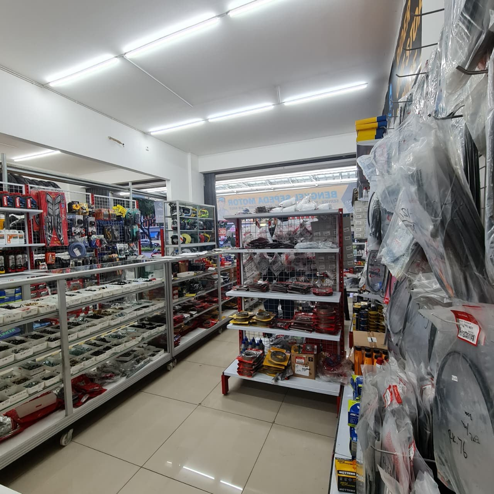
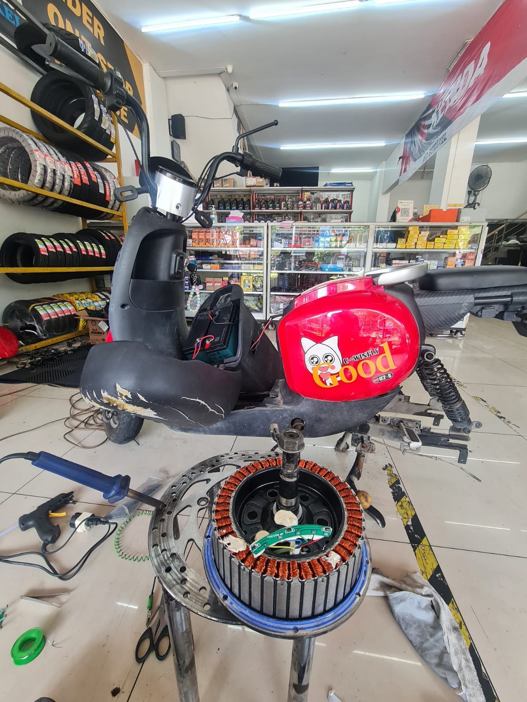
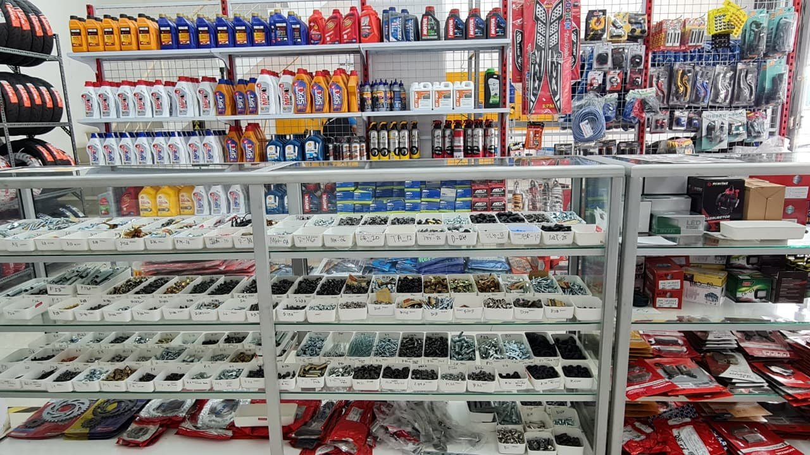
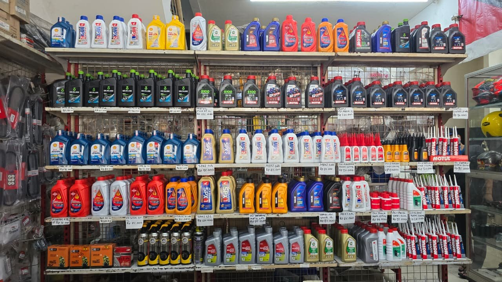
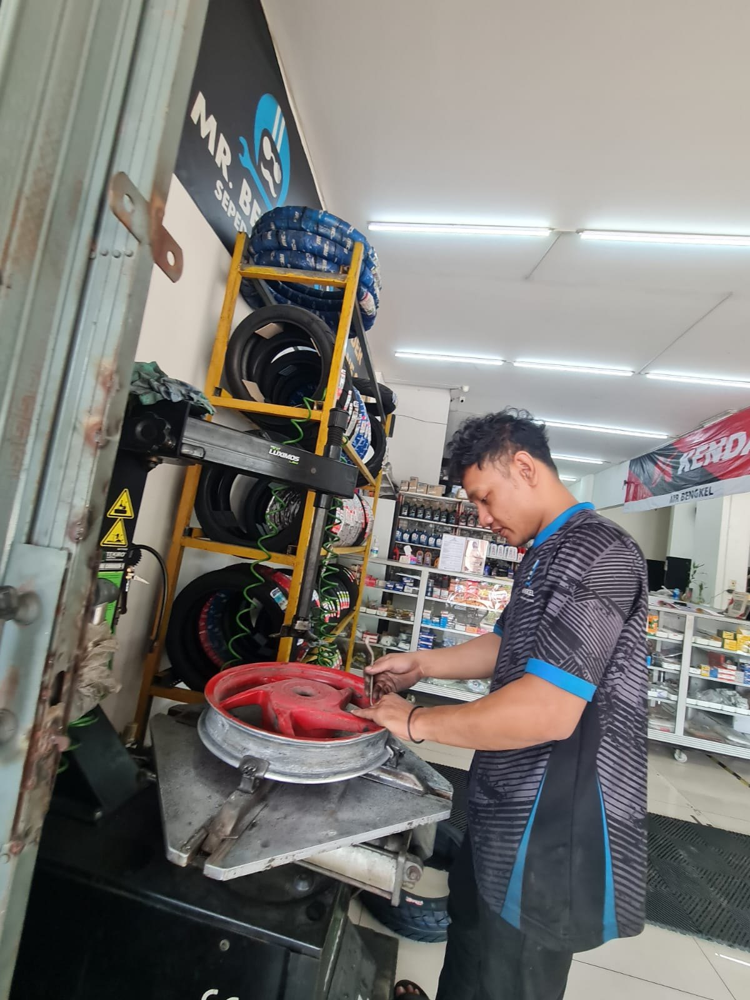
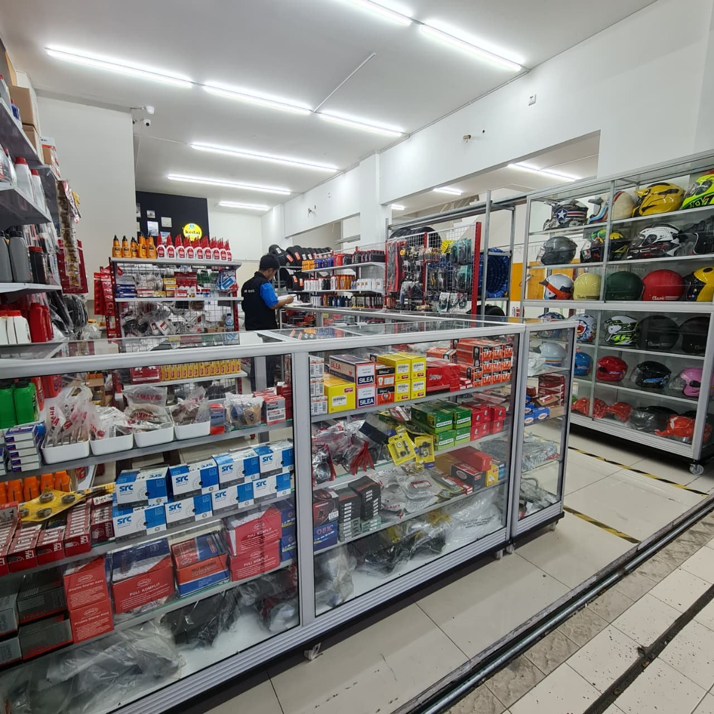
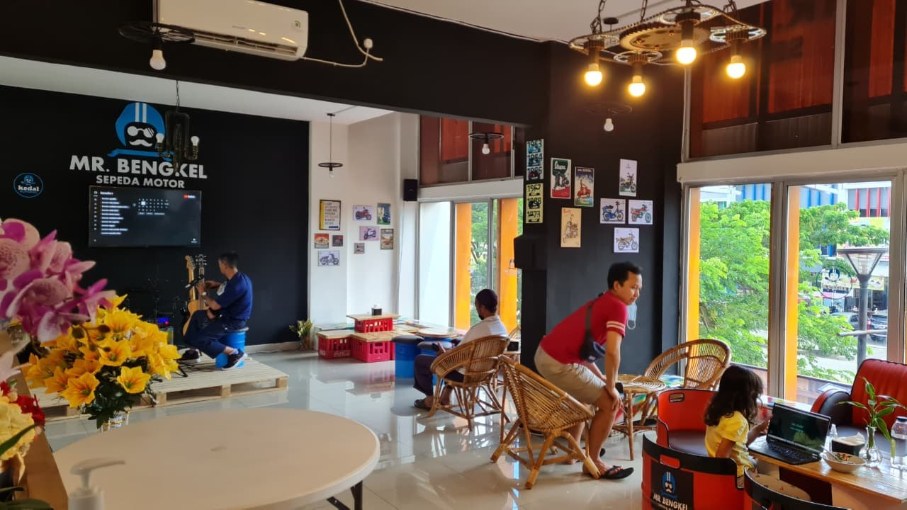
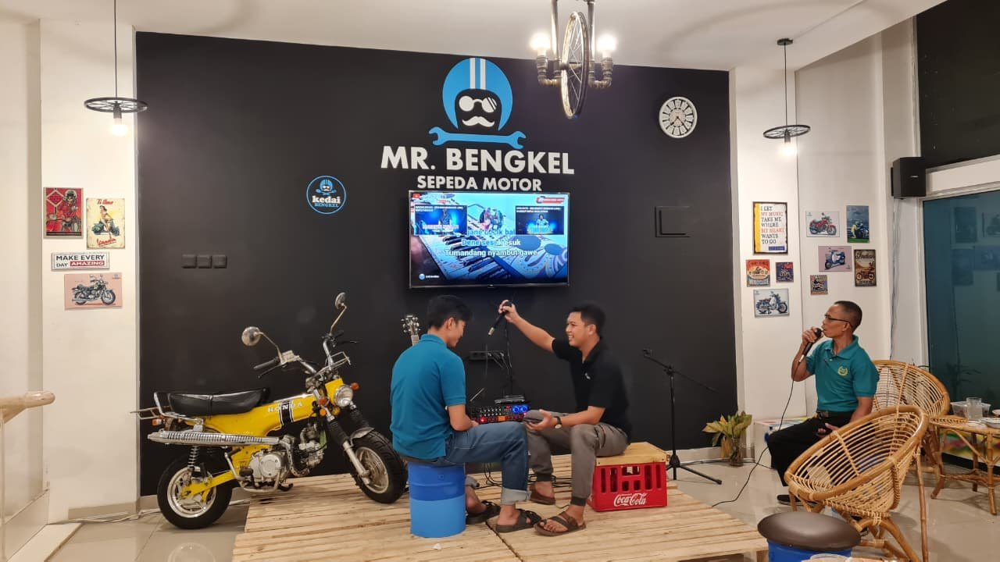

01Servis Sepeda Motor
Dari servis ringan, sedang, hingga turun mesin. Kami membantu merawat kendaraan sesuai kondisi dan kebutuhannya.
Tanyakan layananSEJAK MARET 2022 · MR. BENGKEL
Satu tempat untuk merawat sepeda motor dan sepeda listrik Anda. Dari kebutuhan sparepart hingga servis menyeluruh, kami siap membantu.


TENTANG KAMI
Mr. Bengkel berdiri pada Maret 2022, berawal dari hobi dan kecintaan terhadap dunia otomotif. Berlokasi di Ruko Garden Boulevard, CitraRaya, kami menyediakan layanan servis sepeda motor dan sepeda listrik serta berbagai kebutuhan sparepart dalam satu tempat.
Kami terus meningkatkan kualitas pengerjaan dan melengkapi pilihan sparepart sesuai kebutuhan pelanggan. Pelayanan yang profesional dan jujur, penjelasan kondisi kendaraan yang mudah dipahami, serta biaya yang transparan menjadi perhatian kami.
Setiap kendaraan adalah tanggung jawab.
Setiap kepercayaan layak dijaga.
PRODUK & LAYANAN
Pilih layanan yang Anda butuhkan. Tim kami akan membantu menjelaskan pilihan perawatan dan biayanya.

01Dari servis ringan, sedang, hingga turun mesin. Kami membantu merawat kendaraan sesuai kondisi dan kebutuhannya.
Tanyakan layanan
02Pemeriksaan dan perbaikan sepeda listrik sesuai kebutuhan kendaraan Anda.
Tanyakan layanan
03Berbagai suku cadang untuk perawatan dan penggantian komponen motor dalam satu tempat.
Tanyakan layanan
04Penggantian oli mesin dan oli gardan sesuai spesifikasi kendaraan. Konsultasikan pilihan oli dengan tim kami.
Tanyakan layanan
05Pilihan ban beserta layanan pemasangan untuk mendukung kenyamanan berkendara.
Tanyakan layanan
06Penyediaan dan pemasangan aki sesuai spesifikasi motor. Hubungi kami untuk pilihan dan ketersediaannya.
Tanyakan layananFoto menampilkan aktivitas dan produk di Mr. Bengkel. Harga serta ketersediaan dikonfirmasi melalui admin.
MENGAPA MR. BENGKEL?
Beragam kebutuhan perawatan dan penggantian komponen tersedia dalam satu tempat.
Dari servis ringan sampai turun mesin, untuk motor dan sepeda listrik.
Penjelasan kondisi kendaraan dan biaya yang jelas sebelum keputusan perbaikan.
Bersantai di kedai, menikmati musik dan karaoke, serta air mineral Aqua gratis.
KEDAI MR. BENGKEL
Nikmati waktu Anda di ruang tunggu dengan suasana santai. Ada kedai, musik, dan karaoke untuk menemani kendaraan Anda dirawat.


DI BALIK PELAYANAN KAMI
Aktivitas, produk, dan suasana asli Mr. Bengkel. Klik foto untuk memperbesar.
CERITA PELANGGAN
Ngerjainnya santai tidak terburu buru walaupun banyak antrian, fokus dan rapih
servis bagus, pelayanan ramaah, the best
Pengerjaan rapih harga bersahabat wajib coba
pelayanan yang sangat baik, dan untuk dri mekanik nya pun sangat komunikatif, enak buat di ajak sharing juga, pengalaman dan pengerjaan motornya pun rapih dan totalitas, yang di keluhkan bisa teratasi dengan baik, Terimakasih buat Mr. Asep debestt pokonya 👍
Bengkel lengkap segala motor bisa
Matic bisa
Part lumayan lengkap
Buka jam 08.
Tutup jam 18:00
Bengkel terpercaya dari dulu, admin responsif, mekanik yang berpengalaman, sharing kerusakan dan solusi untuk menyelesaikan masalah.
Ruang tunggu banyak, ada di bawah ataupun di atas, bagi yang tidak kebagian bangku di bawah bisa naik ke Lt2 ada ruang tunggu yang sangat luas, free air minum mineral jadi gak bakalan kehausan, bisa beli minuman dingin lainnya juga ada di showcase.
Apapun kerusakan motor datang dulu aja kesini konsultasi kan sama admin atau mekanik.
Terima kasih Mr.Bengkel citra raya.
Pilihan ulasan pelanggan di Google. Bintang menunjukkan penilaian masing-masing pengulas.
Pernah berkunjung? Tulis ulasan Anda ↗MULAI DARI PERCAKAPAN
Ceritakan kebutuhan Anda. Kami akan menyiapkan pesan yang dapat Anda kirim ke admin melalui WhatsApp.
Permintaan ini belum menjadi booking. Jadwal, biaya, dan ketersediaan layanan dikonfirmasi oleh admin.
KUNJUNGI KAMI
Senin–Minggu
08.00–18.00 WIB